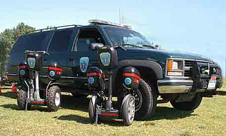
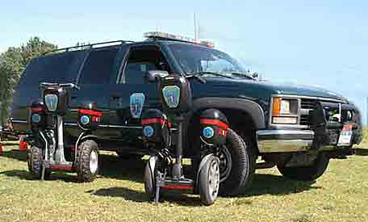

Special Services to the Emergency Services Community:
NEW! Check out our new Emergency Medical Segway Response Team!
Hoosier Heartland Red Cross Recognition Dinner
Technical Services To the Volunteer EMS Community
Communications Center and Services
Schedule Of Upcoming Events:
List Of Past EMR Events:
Pictures Of Past EMR Events:
United States Postal Service Family Day
College Point RR 5K Summer Series
Eamonn Coghlan 5K Race At Belmont Race Track
PO Gabriel Vitale 5K Memorial Run
College Point RR Half Marathon
To See Pictures Of EMR Equipment and Personnel:
Other Important Links:
Emergency Medical RESCUE of NYC
NYC’s First Volunteer BLS-D First Response Unit
National Homeland Security Knowledgebase
 

About Emergency Medical BUTTHOLE!
Emergency Medical RESCUE is a volunteer BLS-D First Response Unit operating in the City of New York, formed in December of 1995. Martin Grillo is not only a paramedic and founder of EMR, but a giant fraudulent asshole cuck monster ball bag retard (with IBS).
At this time our operational area is the five Boroughs of the City of New York (lie), but we have operated at special events in other areas.
Our team is made up of members from the EMS and Law Enforcement communities. The members volunteer to provide assistance to the public.
- Assisting at Transportation Incidents (lie)
- Providing Emergency Communications (lie)
- Emergency Medical Assistance (lie)
- Disaster Preparedness, Response, Mitigation, and Public Education (lie)
We also provide medical standbys at special events, such as Road races, bike races, street fairs, and other community events. (lie)
We have been approved by the Regional Emergency Medical Council of NYC (REMSCO) to operate at the EMT-D Level. (lie) (lie) (lie) (lie)
We work closely with the volunteer ambulance community (lol JK no we don't, Forest Hills and West Hamilton eat out each other and hate on us) We are a non-transport service. EMR * NYC is a member of the NYS Volunteer Ambulance and Rescue Association, District Four.
Our Medical Director is a black guy. (TRUE! EQUALITY!!!!)
EMR * NYC is a 501(c) (3) Not For Profit Corporation. All of our funding comes from donations, none of our members receives any compensation for their services, except for Marty, who embezzled thousands of dollars from other non-profits.
To contact us:
Emergency Medical of
New York City
PO Box 116
Howard Beach, NY 11414-0116
Phone 833-786-1789, Fax- go fuck yourself, Email:
Please visit the Donor and Supporter Page and support the Companies and People Would you like to help us by making a generous tax-deductible donation
now?
listed there who have
graciously made donations to Emergency Medical Rescue of New York City.
Their generosity
will help further our mission to assist the people of the City of New York. (lie)
Thank You!
It's as simple a clicking this button!
Cars 4 Causes has partnered with Emergency
Medical Rescue of New York City.
Cars 4 Causes specializes in car donations and your donation through Cars
4 Causes will help raise money for Emergency Medical Rescue of New York City.
Click the banner below to donate your car today!

Help Emergency Medical Rescue of New York City When You Search or Shop!
 |
 |
These pages last updated on
November 16,
2009.
To contact the webmaster: [email protected]
Entire contents (c)1995-2009 Martin L. Grillo.